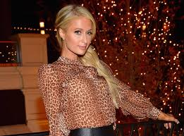

About Paris
Paris Whitney Hilton
When she was young she had started her career in modeling. She did a professional photoshoot for the first time for It Girl. Then she was seen in the campaigns for leading clothing brand like Christian Dior and Tommy Hilfiger, as well as national publications.
Because of her lifestyle and relationships, she has gained the fame and popularity till 2001. In 2002, she was seen in the movie sets. Her first role was in horror flick Nine Lives. Soon, she got a movie and was featured in the movies like Wonderland and Cat in the Hat and began working on her own small-screen reality series.
She was seen in the big screen features The Hills and Raising Helen, and began to branch out into other business interests. She was also the brand ambassadors of a perfume line, a nightclub franchise. She was starred in the second season of The Simple Life.
In January 2018, Hilton modeled Kanye West's Yeezy Season 6 collection by recreating paparazzi photos of Kim Kardashian. She released "I Need You" as a digital download on February 14, 2018 (Valentine's Day). It debuted at number 48 and peaked at number 32 on the Dance Club Songs Billboard chart. Hilton and Boohoo.com collaborated on a 70-piece collection, which launched on June 20, 2018,and after releasing the "Unicorn Mist" rose water in late 2017, a skincare line was released on June 29, 2018. Hilton modeled The Blonds show and opened the show for Namalia during New York Fashion Week in September 2018.In 2018, Hilton was what was described as "the centerpiece" of two projects about social media and various personalities' online presence. The documentary The American Meme premiered on Netflix in December 2018, after screening at the Tribeca Film Festival. It was written and directed by Bert Marcus, and she was one of the executive producers. Rotten Tomatoes gave the film a 93 rating based on 28 reviews, with Hilton receiving acclaim for showing her vulnerability and giving audiences a glimpse into the dark side of fame. Decider reports, "In a series of quiet, reflective interviews,she explains why she trusts her fans more than her friends and dissects the risqué David LaChappelle photoshoot that transformed her into a household name." Furthermore, USA Today shares "5 ways Netflix's The American Meme will change the way you think about Paris Hilton," including the closeness she has with her fans and her genuine self-awareness about the reality of internet stardom and notoriety. Hilton's other social media-themed project was Hollywood Love Story, a six-episode series that aired on Viceland between July and August 2018. In conclusion, Paris Hilton is a big fashion and media icon for young girls all around the world.
For more things Paris click right here! .